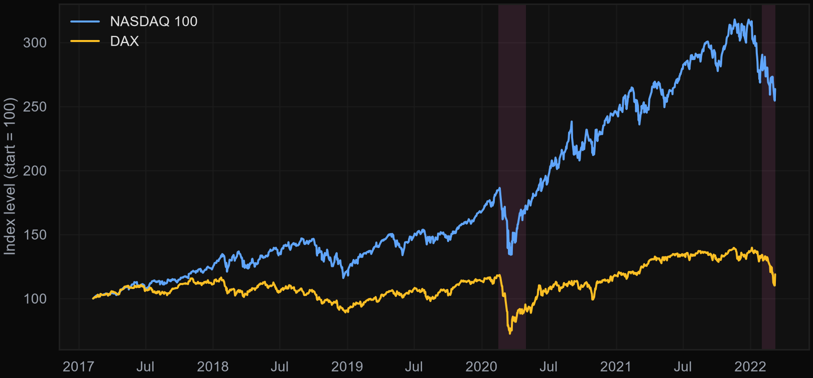
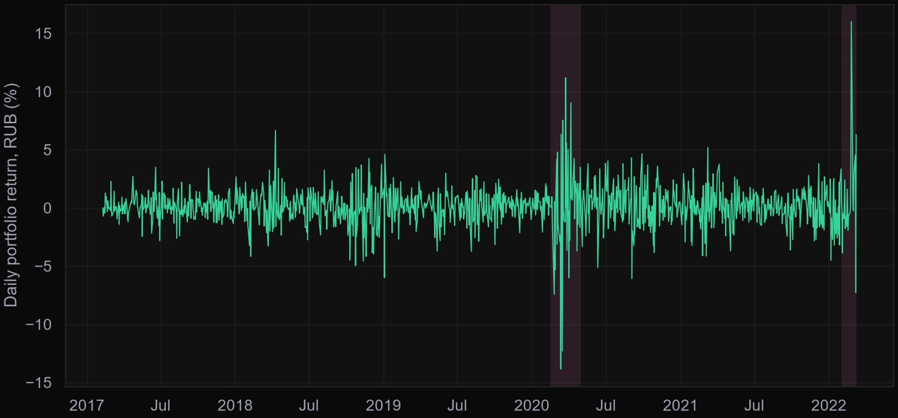
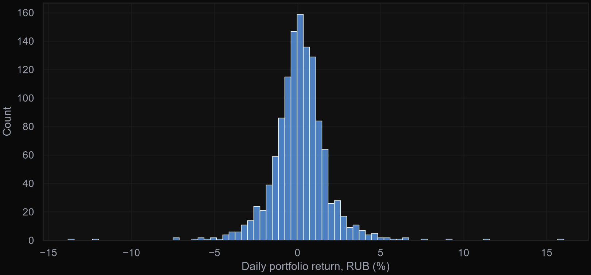
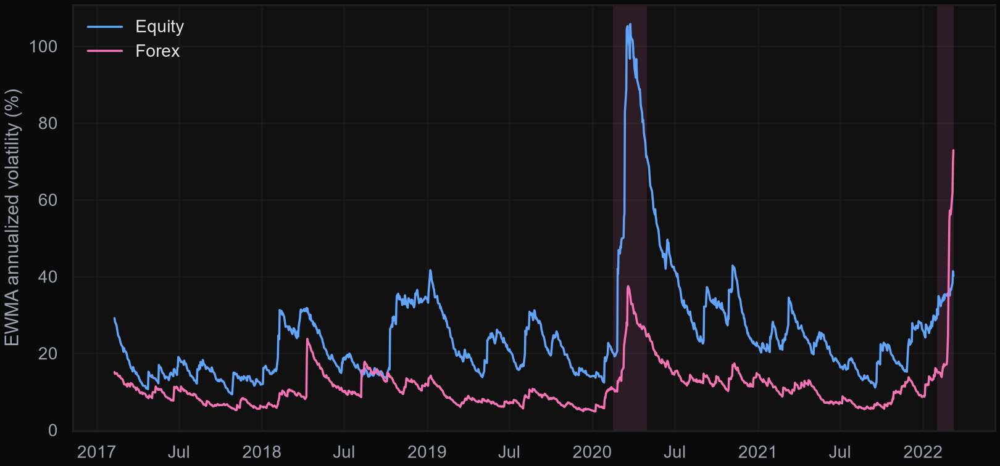
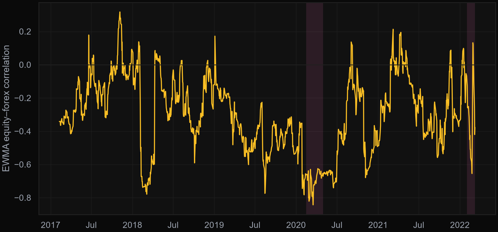
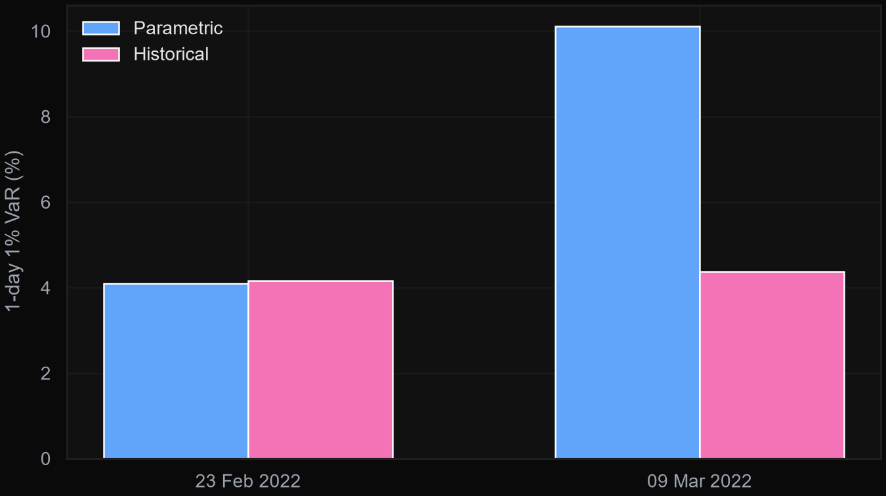

Every chart and figure on this page is generated directly from the notebook's own logic run against the real dataset — nothing here is estimated or approximated.

NASDAQ 100 and DAX, rebased to 100 at the start of the sample. Shaded bands mark the COVID-19 crash (Feb–May 2020) and the run-up to the Russia-Ukraine invasion (Feb–Mar 2022).

Daily portfolio return in rubles (equity + forex components combined). Both crisis windows show a clear jump in the size of daily moves.

Distribution of daily returns — broadly bell-shaped with visible fat tails on both sides, which is exactly why historical VaR and parametric VaR disagree during stress.

Equity volatility spiked to ~106% annualized during COVID-19, roughly 4–5x its typical level. Forex volatility stayed comparatively calm during COVID but spiked to ~73% annualized around the 2022 invasion — briefly the more volatile of the two components.

This is the most counter-intuitive result in the analysis: the equity–forex correlation is negative for essentially the entire sample (ranging from about +0.3 to −0.8), and it moves further negative during both crises rather than converging toward +1. For a ruble-based investor holding US/German equities, that means currency depreciation during a shock tends to offset equity losses rather than compound them — a natural hedge, not a diversification breakdown.

1-day, 1% VaR immediately before the invasion (23 Feb 2022) and two weeks later (9 Mar 2022). Parametric VaR more than doubled — from ~4.1% to ~10.1% — because EWMA volatility reacts sharply to a single extreme return. Historical VaR barely moved (~4.2% → ~4.4%) since it's an empirical quantile over the full return history, not just the latest shock. Neither method is "wrong" — they answer slightly different questions, and comparing them is the point.